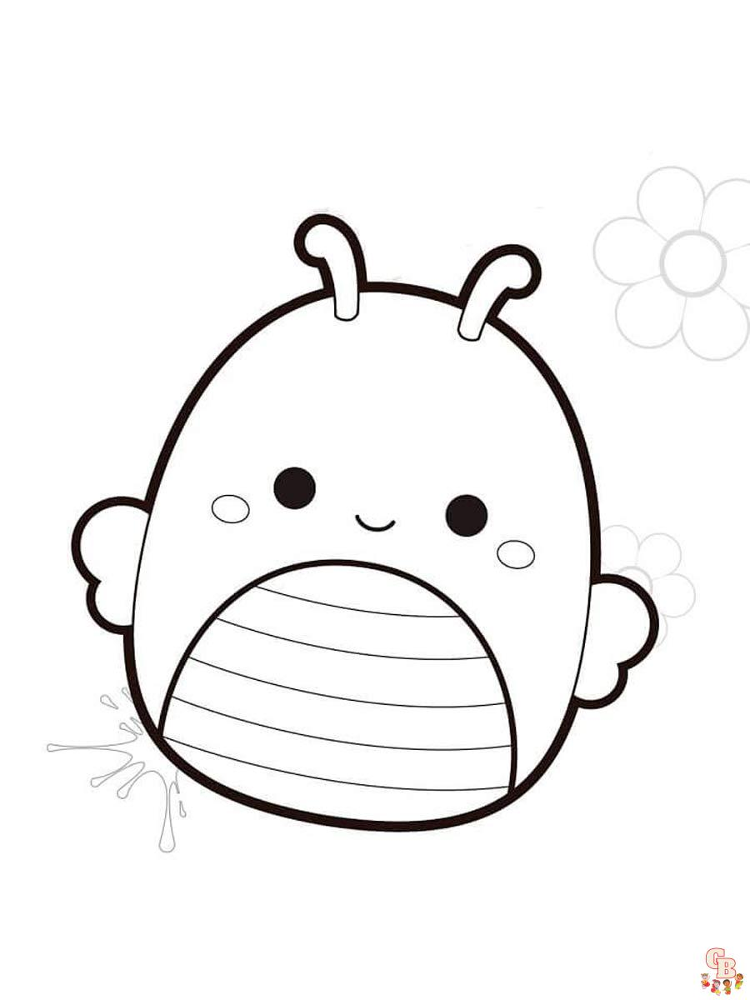

Most content on the web is text-based, so you will find yourself needing to work with HTML text elements quite a bit.
In this lesson, we will learn about the text-based elements you are likely to use the most.
Just as in human relationships, HTML parent elements can have many children. Elements at the same level of nesting are considered to be siblings. For example:
Lets look at this cute squishmellow:
Or at this serious one:

Follow to this page to know more.
Follow the link to find out about image types used on webpages.